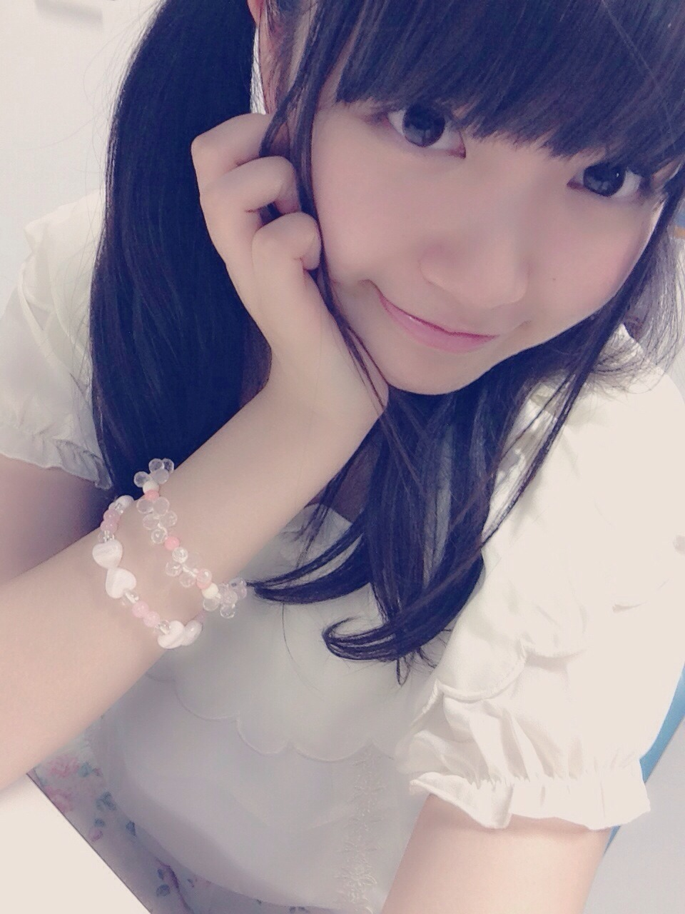
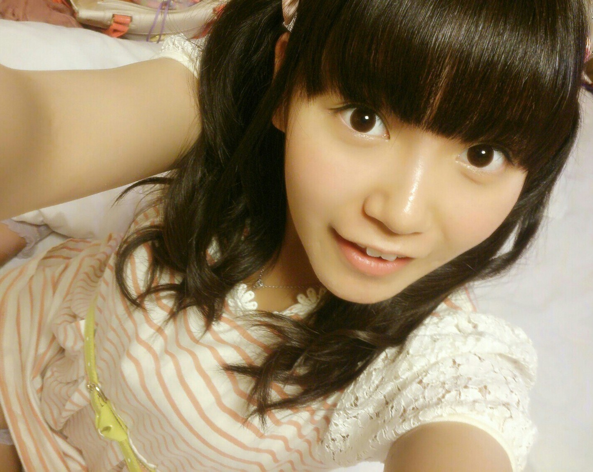
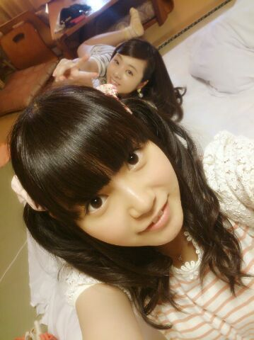
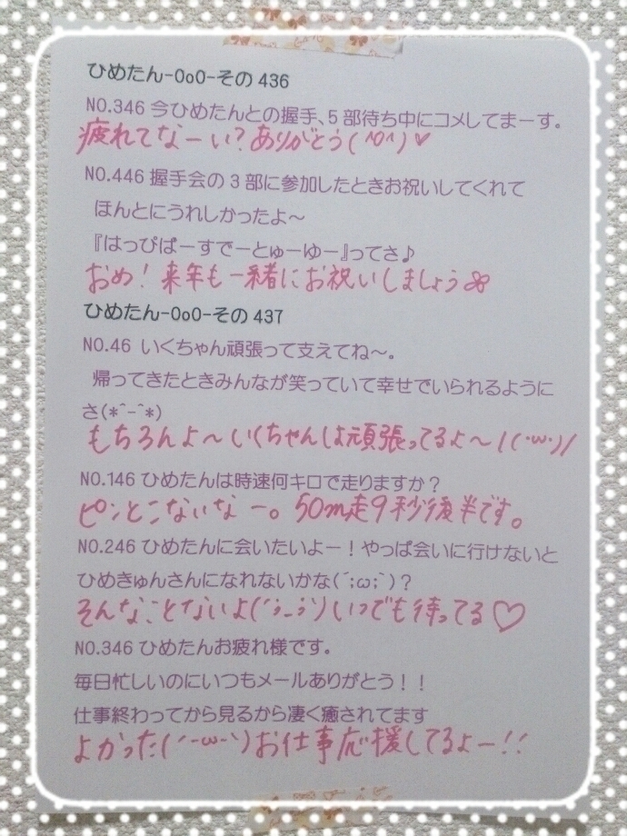

| 2014/08 31 Sun | ひめたん-OoO-その474 |

全国ツアーファイナル！
明治神宮ライブ(^O^)終わりましたー
予報では雨だったんだけど
結局最後まで降らなかったね～
おにゃのこちゃん逆に日焼けとか大丈夫だったかな
来てくださったみなさん
本当にありがとうございました！
いくちゃんは正式に
おかえりなさい、でいいのかな？
初めてのポジションで
大変なこともいっぱいあると思うけど
私もいくちゃんのこと支えるからねー♪
「何度目の青空か？」初お披露目でした
イントロのピアノの音は
何て言うか響く(´-ω-`)ぞわっとする
いくちゃんの挨拶聞いてたら
ぎゅーってしてあげたくなりました
初の野外ライブということで
あと3万人ものひとが来てくれたということで
何もかも新鮮な景色でした
改めてすてきなステージに連れてきてくれて
みなさん本当にありがとう！
君の名は希望や乃木坂の詩は
みなさんのサイリウムが
めちゃめちゃきれいでした( ˙Ο˙ )♡
きゅんきゅん王国のみなさんは
ぴんくのサイリウムやひめたんグッズ
見せてくれてありがとう\❁/
びーむしてうちわもたくさんあったな～
メンバーのみんなもたくさんびーむしたって
教えてくれたよー
ひめたんは視力が良いので
スタンド席もばっちり見えました◎
新衣装もありました～ぴんく～ふりふり～
ヘリも飛んできました♡
夏の最後にみんなと一緒に
打ち上げ花火も見れてよかった\( ˆoˆ )/
キャンプに浴衣に、のぎのぎで夏を満喫したなー
ななみんもちょっとだけどステージ上がって
れなさんともお電話繋がって
全員でラスト締めることができました！
ななみん体調回復してきてるみたいで安心(´；_；｀)
早く良くなりますように。
神宮行ったよってひとは
よかったら感想聞きたいな∩´ω`∩
ツアーを通しての感想でも！
ツアー行けなかったよーってひとはねー
そうだなー
最近食べた中で美味しかったお昼ごはんでも。
次はアンダーライブ！
アンダーライブは客席との距離が近いから
モニターなんか使わないぜ( ´_ゝ`)
10/5~19 六本木ブルーシアター
チケットは今夜乃木どこ終了後から受付開始
モバイル会員様限定先行受付になっています！
よろしくお願いします♪
のぎ天後編観てくれましたかー？


旅館の和室 はしゃぎたくなるやーつー
ひめたんまだ観てないんだけど
どの辺だろう
肝試し？寝顔？とかだよねー
次更新するまでに観てみるね♪
みなさん感想ぜひ教えてくださーい(^O^)
あと、公式サイトに
結成3周年記念動画上がってます☆
サイコロトークしてるよー
ふわっとしてるよー
ぜひチェックしてみてくださいっ

 きゅんきゅん王国にときどき出現する羊さん
きゅんきゅん王国にときどき出現する羊さん
お名前はあるんでしたっけ？
今はないんだよねー
名付け親ひっそり募集。
悪用はしないので
ひめたんの弱点や苦手なものを
もっといっぱい教えてください。
絶対教えないでーす(´^ω^｀)
私、齋藤飛鳥軍団(仮)なので
飛鳥がビジネスパートナーとして
お世話になっているので
今度ひめきゅん王国にお邪魔したいと
思ってたおります。
手土産は何がよろしいでしょうか。
ぷりんがいいでーす♡
あすかりんパフェ好きだよね
そういや最近あすかりんがパフェパフェ言ってるの
聞かないな
あすかりんも大人になったんだねえ(遠い目)
ひめたんの好きな花を教えてください。
マーガレット！
小さい時からずっと一緒にいる
くまのぬいぐるみに
マーガレットちゃんって名前の子がいます(＊^ω^＊)
ひめたんがひたすら重い物運ぶ企画か、
ひたすらなんか食べてる企画やってほしいです
それ何人が喜んでくれるかね？
どんだけカメラ回しても
撮れ高おっけーになる気しないんですが......
月刊少女野崎くんの千代ちゃんが
高校生にもなってでけえリボンつけてます
どう思いますか？
観てるよー野崎くん面白い！
メイクさんとも毎週野崎くんの話で盛り上がる！
かわいいよ千代ちゃんん
そうですね、近いものを感じ......はしないけど
いやりぼんはめちゃめちゃ似合ってますよ！
エンディングもかわいいよー♡
ひめたんは小学生の頃、ランドセル何色だった？
これ言ったことなかったっけな？
濃いオレンジ！
なかなかきれいな色でお気に入りだったよ( ˘ω˘ )
ひめたんの日記の
コメント欄下２ケタに46を踏んだ方へ
手書きでコメ返するコーナー
＼ ひめたん46 ／


いつもコメントたくさん
ありがとうございます
みのじゃなくて のみ。
時速50キロは異常。
ごめんなさいねー未知なもので(´・ω・｀)
違うの！時速50キロは
別にそれくらいで走るとかわかんないけど
どれくらいなんかなって基準が知りたかったの！
そしたら世界記録って、乗用車レベルって
いやー怖いね知識不足って......
(＊´・ω・＊)
コメント(798)
2014/08/31 23:36